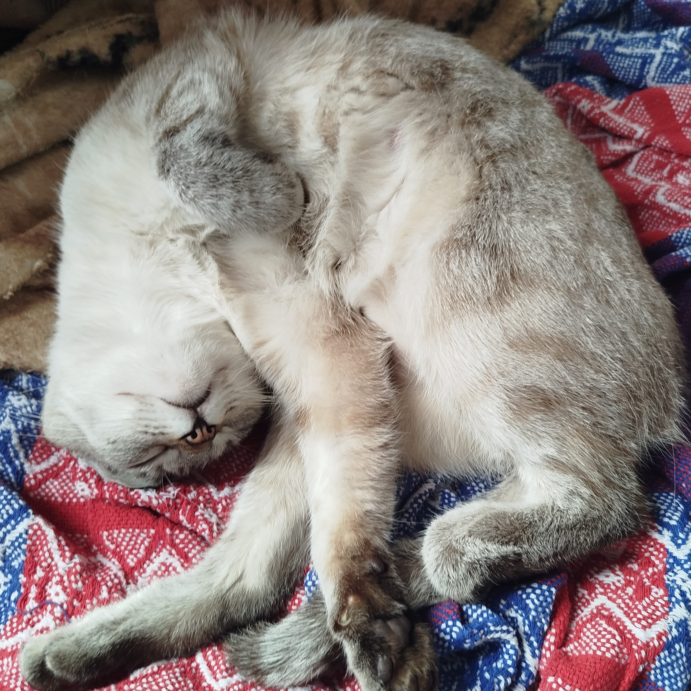
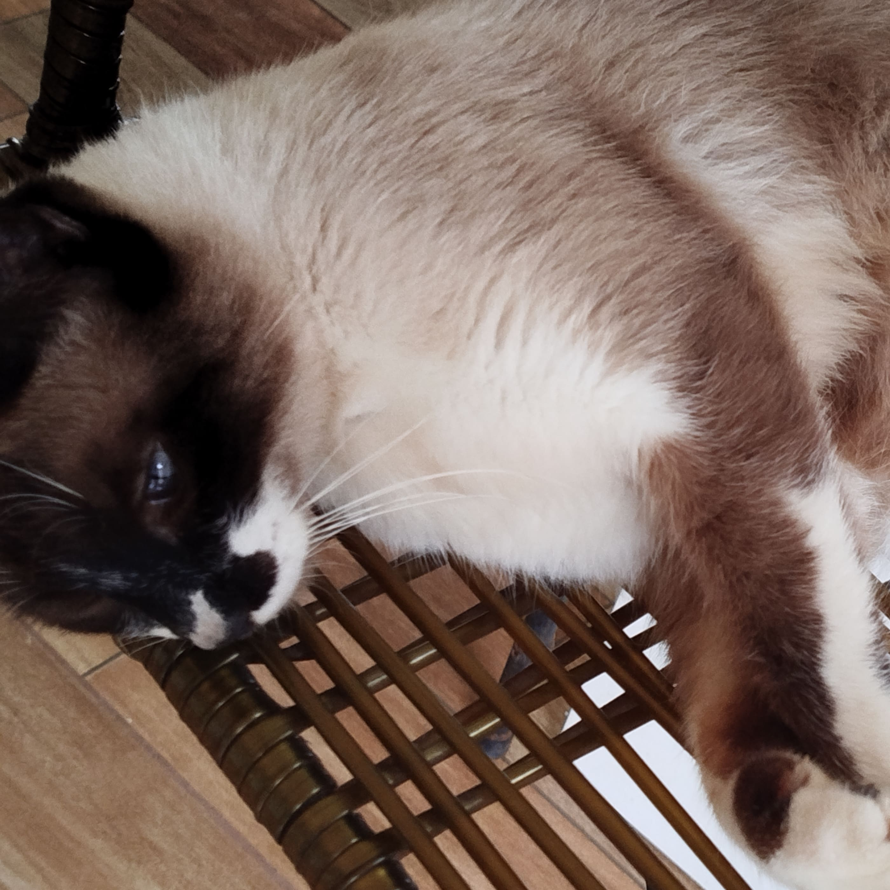
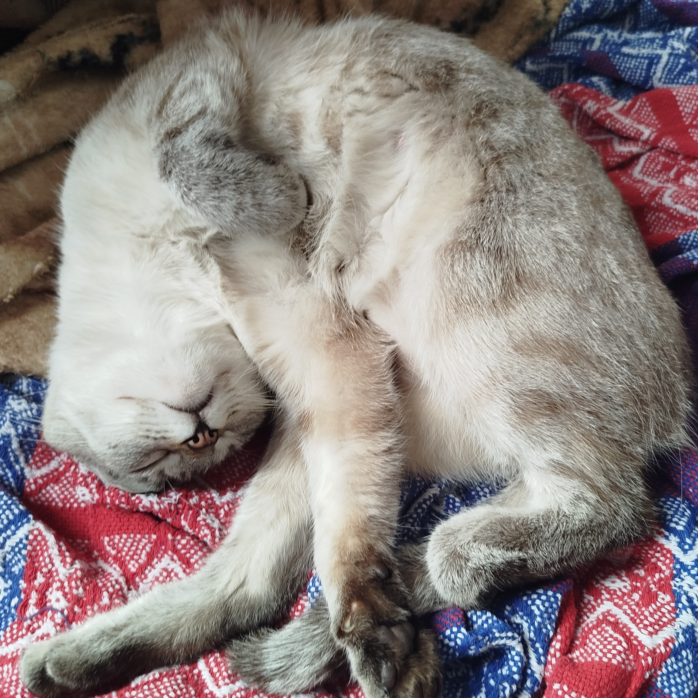
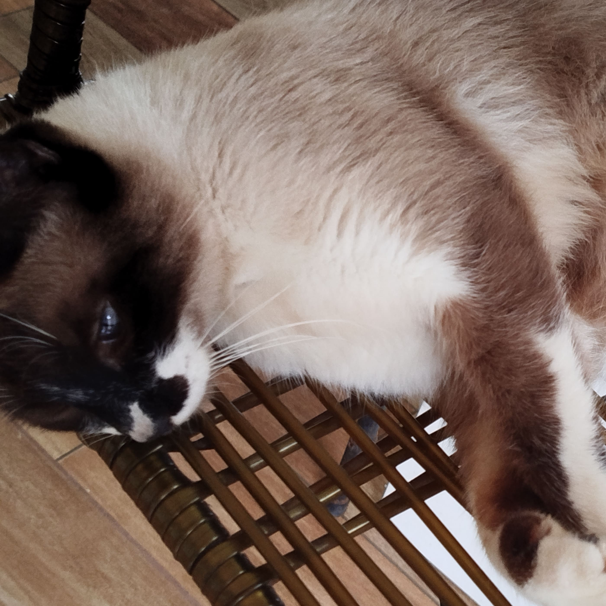

Lar Felino
Com a sua ajuda, podemos dar a esses felinos não apenas alimento, mas também a oportunidade de encontrar um lar seguro e amoroso. Adote, doe, compartilhe. Juntos, podemos fazer a diferença! 🐾💙

Cada contribuição, por menor que seja, faz toda a diferença para os nossos peludinhos!

 


